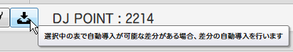
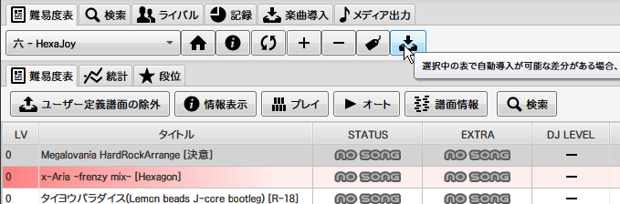
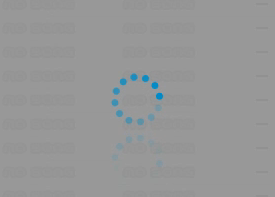
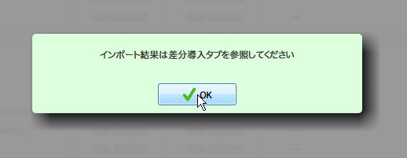
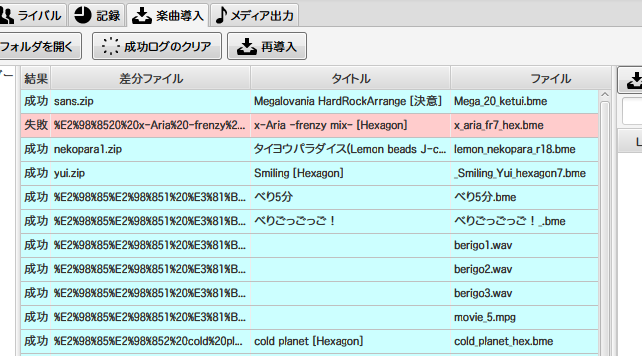
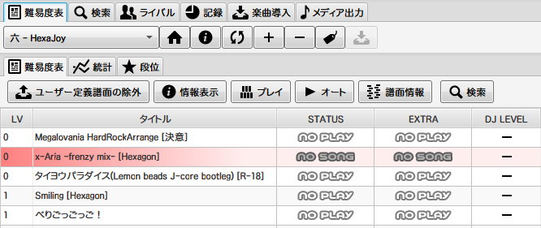

GLAssistの差分自動導入を難易度表に実装する
GLAssistの差分自動導入
↓これについての話がどこにもなかったのでメモ
このボタンを押すことで、表内の本体は持っているが差分は未所持の譜面を自動でダウンロード、インストールしてくれる機能。
自動でダウンロードしてくれるのは差分のみで、本体のダウンロードは行われない。
難易度表に導入する
難易度表のデータ部に以下の項目を導入する。
- "org_md5" : 同梱譜面のmd5ハッシュ値
- "url_diff" : 差分のダウンロードURL
"org_md5" : 同梱譜面のmd5ハッシュ値
同梱譜面のmd5ハッシュ値を指定する。
ここで指定したmd5の譜面を所持していると差分自動導入が可能になり、この譜面のあるフォルダに差分がインストールされる。
"url_diff" : 差分のダウンロードURL
差分のダウンロードURLを指定する。
ただし、このURLは以下の条件をすべて満たす必要がある。
- 譜面ファイル(bmeなど)またはそのアーカイブ(zipなど)への直リンクである
- GETリクエストに対してファイルが返ってくる
- たとえば GoogleDrive (export=download を付けたものも含む) や、Internet Archive は使用できない
- それ以外の直リンクっぽいものは基本問題ないと思われる
- URLの末尾が "/ファイル名" となっている
- たとえば "http://xxxxxxxx.com/sabun.zip" こんなURLは使用できる
- 差分アップローダーなどの "http://xxxxxxxx.com/upload.cgi?get=00001" こんなURLは使用できない
- ただし、以下のようにダミーのパラメータをつけることで無理やり対応させることもできる "http://xxxxxxxx.com/upload.cgi?get=00001&/00001.zip"
まとめると、
以下のようなURLの場合は問題なく使用できる。
- http://xxxxxxxx.com/sabun.zip
パラメータがつくURLの場合は最後にダミーのパラメータをつけることで無理やり対応させることができる。
- http://xxxxxxxx.com/upload.cgi?get=00001
- http://xxxxxxxx.com/upload.cgi?get=00001&/00001.zip
Dropboxの場合は共有リンクを以下のように変更することで使用できる。
- https://www.dropbox.com/s/xxxxxxxxxxxxxxx/sabun.zip?dl=0
- https://dl.dropboxusercontent.com/s/xxxxxxxxxxxxxxx/sabun.zip
GoogleDriveにアップロードされている差分は自動導入を使用できない。
実際に使用する
org_md5 の譜面を所持していてかつ、差分は未所持の差分が1つでも存在する場合、差分自動導入のボタンがクリック可能になる。
クリックすると自動導入が始まる。url_diffのファイルをダウンロードし、GLAssistの楽曲導入機能を通じて差分がインストールされる。自動導入中は以下のような画面になるのみで、進行状況などは表示されない。
完了。
差分導入タブに移動すると自動導入の結果が表示される。
GLAssistの楽曲導入機能を使用するため、この機能に対応していない形式の差分は導入に失敗する。(以下の x-Aria -frenzy mix- [Hexagon] 等)
難易度表タブに戻り表を更新すると差分の導入に成功していることが分かる。
まとめ
本体を持っていれば差分の導入が楽になる。
現在はBeMusicSeekerに直リンクの本体、差分を自動インストールする機能があるのでそっちで十分かも。